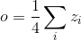
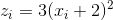
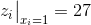
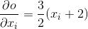
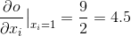

自动求导: 自动微分
译者：@小王子
校对者：@李子文
PyTorch 中所有神经网络的核心是 autograd 自动求导包. 我们先来简单介绍一下, 然后我们会去训练我们的第一个神经网络.
autograd 自动求导包针对张量上的所有操作都提供了自动微分操作. 这是一个逐个运行的框架, 这意味着您的反向传播是由您的代码如何运行来定义的, 每个单一的迭代都可以不一样.
让我们用一些更简单的术语与例子来了解这些套路.
Variable（变量）
autograd.Variable 是包的核心类. 它包装了张量, 并且支持几乎所有的操作. 一旦你完成了你的计算, 你就可以调用 .backward() 方法, 然后所有的梯度计算会自动进行.
你还可以通过 .data 属性来访问原始的张量, 而关于该 variable（变量）的梯度会被累计到 .grad 上去.

Variable
还有一个针对自动求导实现来说非常重要的类 - Function.
Variable 和 Function 是相互联系的, 并且它们构建了一个非循环的图, 编码了一个完整的计算历史信息. 每一个 variable（变量）都有一个 .grad_fn 属性, 它引用了一个已经创建了 Variable 的 Function （除了用户创建的 Variable 之外 - 它们的 grad_fn 为 None ）.
如果你想计算导数, 你可以在 Variable 上调用 .backward() 方法. 如果 Variable 是标量的形式（例如, 它包含一个元素数据）, 你不必指定任何参数给 backward(), 但是, 如果它有更多的元素. 你需要去指定一个 grad_output 参数, 该参数是一个匹配 shape（形状）的张量.
import torch
from torch.autograd import Variable
创建 variable（变量）:
x = Variable(torch.ones(2, 2), requires_grad = True)
print(x)
variable（变量）的操作:
y = x + 2
print(y)
y 由操作创建,所以它有 grad_fn 属性.
print(y.grad_fn)
y 的更多操作
z = y * y * 3
out = z.mean()
print(z, out)
梯度
我们现在开始了解反向传播, out.backward() 与 out.backward(torch.Tensor([1.0])) 这样的方式一样
out.backward()
但因 d(out)/dx 的梯度
print(x.grad)
你应该得到一个 4.5 的矩阵. 让我们推导出 out Variable “”. 我们有 ,  和 . 因此, , 所以 .
你可以使用自动求导来做很多有趣的事情
x = torch.randn(3)
x = Variable(x, requires_grad = True)
y = x * 2
while y.data.norm() < 1000:
y = y * 2
print(y)
gradients = torch.FloatTensor([0.1, 1.0, 0.0001])
y.backward(gradients)
print(x.grad)
稍候阅读:
Variable 和 Function 的文档请参阅 http://pytorch.apachecn.org/cn/docs/0.3.0/autograd.html